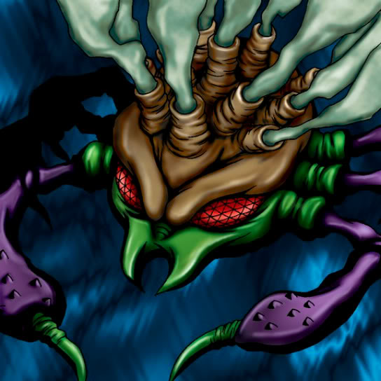

Muka Muka

Description: "When this card is flipped face-up, the power of this card increases by 300 points for every monster in the controlling player's graveyard."
STATS
ATK: 600
DEF: 300DECK COST
Deck Cost per Card: 14EFFECT NOT IMPLEMENTED
Fusion List (47 Possible Fusions)
- Muka Muka + Amazon of the Seas = Mystical Sand
- Muka Muka + Fairywitch = Mystical Sand
- Muka Muka + Armaill = Minomushi Warrior
- Muka Muka + Baby Dragon = Stone D.
- Muka Muka + Blackland Fire Dragon = Stone D.
- Muka Muka + Bone Mouse = Stone Ghost
- Muka Muka + Crawling Dragon #2 = Stone D.
- Muka Muka + Crawling Dragon = Stone D.
- Muka Muka + Dark Elf = Mystical Sand
- Muka Muka + Dark Magician Girl = Mystical Sand
- Muka Muka + Dark Witch = Mystical Sand
- Muka Muka + Doron = Minomushi Warrior
- Muka Muka + Dragon Statue = Stone D.
- Muka Muka + Dragon Zombie = Stone D.
- Muka Muka + Dragoness the Wicked Knight = Minomushi Warrior
- Muka Muka + Fire Eye = Dissolverock
- Muka Muka + Flame Ghost = Stone Ghost
- Muka Muka + Goddess of Whim = Mystical Sand
- Muka Muka + Greenkappa = Minomushi Warrior
- Muka Muka + Ice Water = Mystical Sand
- Muka Muka + Kagemusha of the Blue Flame = Minomushi Warrior
- Muka Muka + Key Mace = Mystical Sand
- Muka Muka + LaMoon = Mystical Sand
- Muka Muka + Lesser Dragon = Stone D.
- Muka Muka + Lunar Queen Elzaim = Mystical Sand
- Muka Muka + M-Warrior #1 = Minomushi Warrior
- Muka Muka + M-Warrior #2 = Minomushi Warrior
- Muka Muka + Maiden of the Moonlight = Mystical Sand
- Muka Muka + Masked Clown = Minomushi Warrior
- Muka Muka + Moon Envoy = Minomushi Warrior
- Muka Muka + Mystical Elf = Mystical Sand
- Muka Muka + Nemuriko = Mystical Sand
- Muka Muka + One-Eyed Shield Dragon = Stone D.
- Muka Muka + Petit Dragon = Stone D.
- Muka Muka + Queen's Double = Mystical Sand
- Muka Muka + Queen of Autumn Leaves = Mystical Sand
- Muka Muka + Rose Spectre of Dunn = Mystical Sand
- Muka Muka + Shadow Specter = Stone Ghost
- Muka Muka + Skull Servant = Stone Ghost
- Muka Muka + Spike Seadra = Stone D.
- Muka Muka + Swordsman from a Foreign Land = Minomushi Warrior
- Muka Muka + Trap Master = Minomushi Warrior
- Muka Muka + Turtle Raccoon = Boulder Tortoise
- Muka Muka + Turtle Tiger = Boulder Tortoise
- Muka Muka + Water Element = Mystical Sand
- Muka Muka + Waterdragon Fairy = Mystical Sand
- Muka Muka + Wicked Dragon with the Ersatz Head = Stone D.